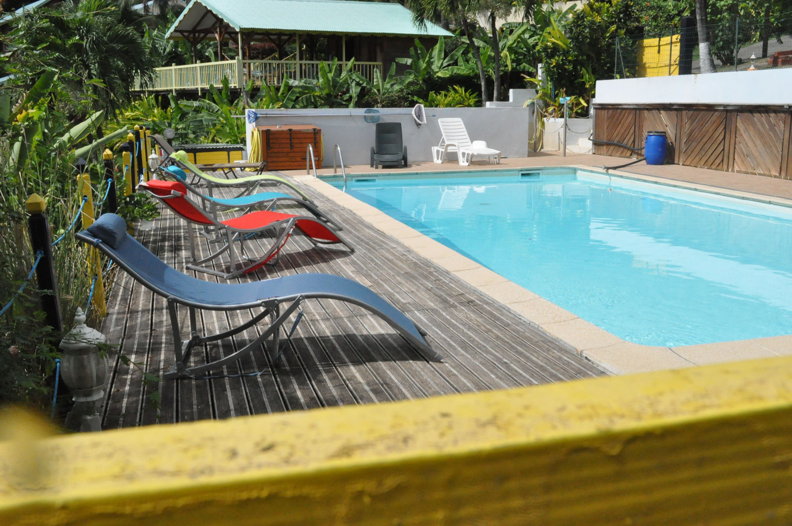

Morne TARARE - 97125 BOUILLANTE
Tél./Fax : 05 90 98 72 05 - Mobile : 06 90 40 63 48 cliquez ici --> :
gite@nidtropical.com
BUNGALOW GUADELOUPE
|
|||||||||||||||||||||||||||||||||
Ou partir en vacances ? Choisissez un sejour pas cher EN GUADELOUPE!Tarifs 2014 - 2015, Location de gîtes bungalow avec piscine EN GUADELOUPELe nid tropical a augmenté d'environ 5% en 5 ans pour l'exercice 2015 pour compenser votre assurance annulation. Nous vous conseillons de la prendre car leurs tarifs sont très attratifs, en ce qui concerne nos locations de vacances en bungalow ou appartement, merci Nid Tropical. ( vous avez un lien assurance ci dessous ) Profitez d'agréables vacances en Guadeloupe, dans un lieu privilégié pour un séjour en famille, à deux ou entre amis. Pour votre sejour pas cher en Guadeloupe, le Nid Tropical bungalow met à votre disposition une formule Patch de 2 bungalows, formule qui se plie au mieux à vos exigences. Le Nid Tropical vous propose des solutions avantageuses de location de voiture avec ses partenaires et transfert gratuit aéroport avec ceux-ci! Si vous arrivez en heure tardive ou lors de fermeture des magasins nous vous mettons votre premier petit-déjeuner dans votre réfrigérateur. Bungalows Guadeloupe et gites en Guadeloupe avec piscine, nos offres de sejour de location de gite et de bungalow en Guadeloupe vous assurent tout le confort en autonomie pour passer de vrais moments de détente. Sur notre page photos, découvrez notre gite en Guadeloupe et ses bungalow s, sa vue à vous couper le souffle, ses espaces, son jardin, sa piscine, son carbet... ! Ainsi pour passer un séjour en Guadeloupe, vous avez le choix entre différents bungalows ou l'appartement dans notre gite accueillant pour votre voyage en Guadeloupe ! Pour votre sejour de vacances inoubliables en Guadeloupe ! BUNGALOW : gite Guadeloupe Bungalow ventilé créole bois en Guadeloupe avec brasseur d'air de 2 à 3 personnes :
NOUVEAUTE ! Pour votre sejour pas cher aux Antilles !Formule "Patch" : 2 bungalows ventilés créoles en bois avec brasseurs d'air, côte à côte pour 4 à 6 personnes BUNGALOWS CLIMATISES Bungalow climatisé placé sous le carbet devant la piscine pour 2 à 4 personnes :
TARIFS bungalow Guadeloupe à la semaine (dégressifs à partir de 3 semaines et + )
Les tarifs et photos de l'appartement Guadeloupe sont sur la page appartement de ce site. Il n'y a pas de supplément adulte et enfant au Nid Tropical, "nous louons au bungalow". Pour un séour pas cher en Guadeloupe en bungalow ou appartement : Vous trouverez des plats à emporter à 2 minutes du Nid Tropical ! Bungalows en Guadeloupe : mode de paiement ?Linge de maison et taxes compris Conditions de réservation Pour réserver un bungalow climatisé, un bungalow créoleavec clim mobile ou un "Patch" ou l'appartement à Bouillante Guadeloupe, il faut nous confirmer par mail votre réservation et sous huitaine, verser un acompte de confirmation de 30% en chèque, CB ou chèques vacances, accompagné de votre contrat de location (cliquez sur le mot contrat pour le télécharger en fichier pdf) à lire attentivement et à remplir. En retour vous recevrez un accusé de réception. Sinon vous pouvez l'avoir en fichier word en cliquant ici que vous pouvez remplir et renvoyer par mail directement. Le solde doit être intégralement réglé le jour de votre arrivée au gîte ainsi qu'un dépot de garantie de 200€. Le nid tropical n'a pas eu d'augmentation depuis 5 ans, et encore, ces années 2013-2014 pour compenser votre assurance annulation que nous vous conseillons de prendre. Leurs tarifs sont très attratifs, en ce qui concerne nos locations de vacances en bungalow, merci Nid Tropical. ( vous avez un lien assurance ci dessous ) Vous pouvez souscrire une assurance annulation avec Europ Assistance ou une autre de votre choix. Hebergement bungalow en Guadeloupe, la perle de l'arc antillais: n'hésitez pas à nous contacter pour plus de détails sur notre gite bungalow Guadeloupe! Paiements acceptés : Chèque, CB, espèces, chèques vacances ANCV.
Le carbet avec sa vue  La piscine et son deck La piscine et sa vue
|
|||||||||||||||||||||||||||||||||
|
SCI Gîte LE NID TROPICAL - Hebergement gites Bouillante Malendure Guadeloupe -
Location de Bungalow et Gite Sejour Guadeloupe. |
|||||||||||||||||||||||||||||||||


 Dépot de garantie demandé à l'arrivée (200€)
Dépot de garantie demandé à l'arrivée (200€)